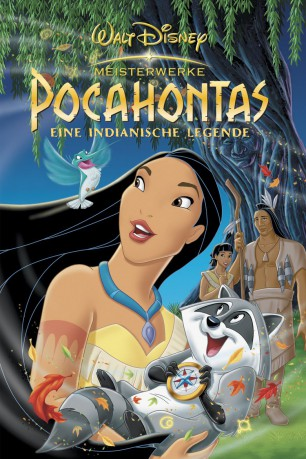

#3326 Pocahontas
Auszeichnungen: 2 Oscars gewonnen 1 GoldenGlobes gewonnen
 gesehen am 13.03.2016
gesehen am 13.03.2016
 
 IMDB-Wertung: 6.7 / 10
IMDB-Wertung: 6.7 / 10  Metascore: 58
Metascore: 58 
Die Ankunft eines fremden Schiffes, angeführt von dem englischen Kapitän John Smith, versetzt die Indianer vom Stamme der Powhatan in Aufregung. Dagegen kennt die Neugier der wißbegierigen Häuptlingstochter Pocahontas keine Grenzen.Dies ist der Anfang einer unvergleichlichen Legende voller Abenteuer und Spaß: von aberwitzigen Verfolgungsjagden mit dem Waschbären Meeko, dem frechen Kolibri Flit und dem verwöhnten Schoßhündchen Percy bis zu Pocohontas’ mutiger Entscheidung, die die Geschichte zweier Völker bestimmen wird. Mit Hilfe ihrer weisen Beraterin, Großmutter Weide, lernt Pocohontas auf ihre innere Stimme zu hören und dem “Farbenspiel des Winds” zu folgen…
Jahr: 1995
Dauer: 81 Minuten
FSK: 0
Land: USA Studio: Buena Vista Pictures Distribution, Inc.Tonspuren: DTS - ,
Untertitel:
Auflösung: 1080p (1920x1080) Größe: 4044 MB
Genre: Drama, Abenteuer, Animation/Trick, Familie, Liebe, Geschichte, Musical
Regisseur: Mike Gabriel, Eric Goldberg
Drehbuch: Carl Binder, Susannah Grant, Philip LaZebnik, Glen Keane, Joe Grant
Soundtrack: Alan Menken
Darsteller:
- Irene Bedard als Pocahontas
- Judy Kuhn als Pocahontas , singing voice
 Mel Gibson als John Smith
Mel Gibson als John Smith David Ogden Stiers als Governor Ratcliffe / Wiggins
David Ogden Stiers als Governor Ratcliffe / Wiggins John Kassir als Meeko
John Kassir als Meeko- Russell Means als Powhatan
 Christian Bale als Thomas
Christian Bale als Thomas Linda Hunt als Grandmother Willow
Linda Hunt als Grandmother Willow Billy Connolly als Ben
Billy Connolly als Ben Frank Welker als Flit
Frank Welker als Flit- Michelle St. John als Nakoma
 Gordon Tootoosis als Kekata
Gordon Tootoosis als Kekata- Richard A. Bercot als Speaker: Shawnee Nation United Remnant Band
- Danny Mann als Percy
- Joe Baker als Lon
- James Apaumut Fall als Kocoum
- Lesa Wakwashbosha Green als Speaker: Shawnee Nation United Remnant Band
- Rebecca 'Dasse Manitsa' Hawkins als Speaker: Shawnee Nation United Remnant Band
- Gayle Melassa Pope als Speaker: Shawnee Nation United Remnant Band
- Stephen Snow Owl Bunch als Speaker: Shawnee Nation United Remnant Band
- Ginny Ah'Chantooni Frazier als Speaker: Shawnee Nation United Remnant Band
Datei: X:\Kinder Disney HD\Pocahontas\Pocahontas (1995, FSK0, 1920x1080).mkv seit 13.03.2016
Festplatte: Kinder-Filme+Trick
 Alle Filme aus Gruppe 'Kinder Disney HD\Pocahontas'
Alle Filme aus Gruppe 'Kinder Disney HD\Pocahontas'